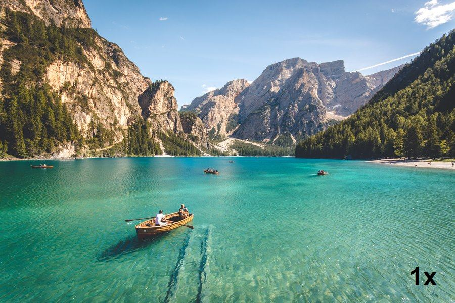
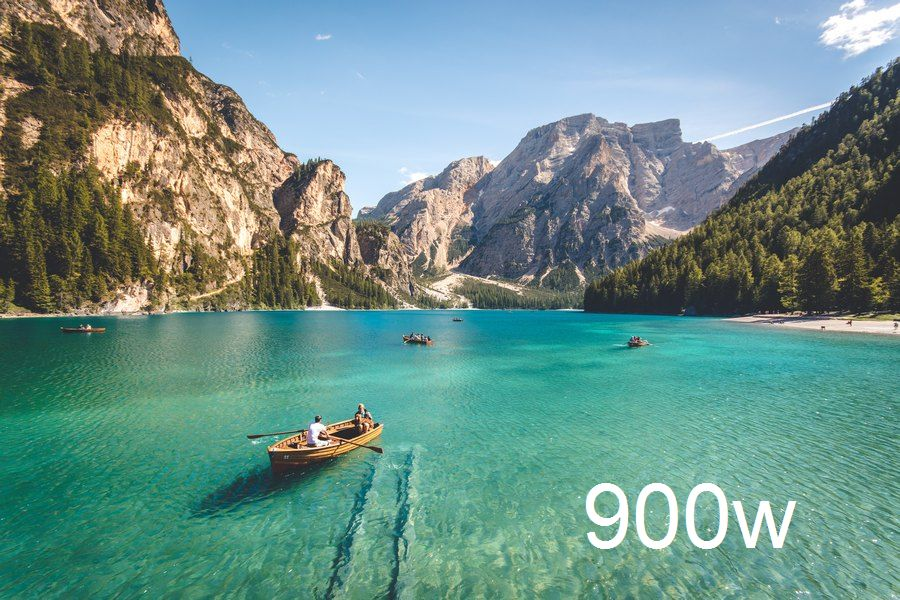
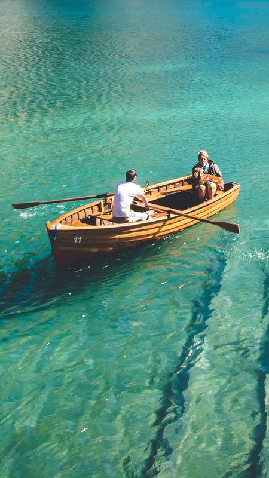
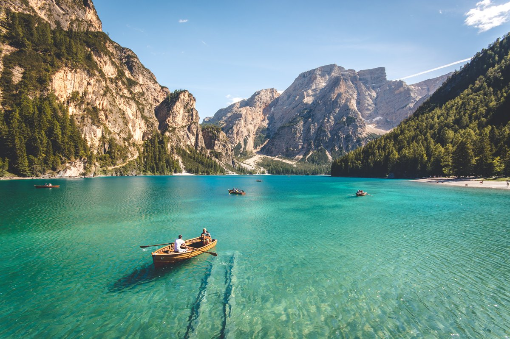

Responsive Image Tests | HTML
1. The <img> element with a single image source

2. The <img> element with a single image source and <figcaption>
Lake, mountains, boats
3. The <img> element with a single image source and sizing hints
4. The <img> element with srcset and x-descriptors

5. The <img> element with srcset, w-descriptors, and a single value for sizes

6. The <img> element with srcset, w-descriptors, and three values for sizes
7. The <source> element with single image sources and the media attribute

8. The <source> element with x-descriptors and the media attribute
9. The <source> element with the type attribute (file formats: AVIF, WebP, JPG)

10. The <source> element with both the media and type attributes (file formats: WebP, JPG)